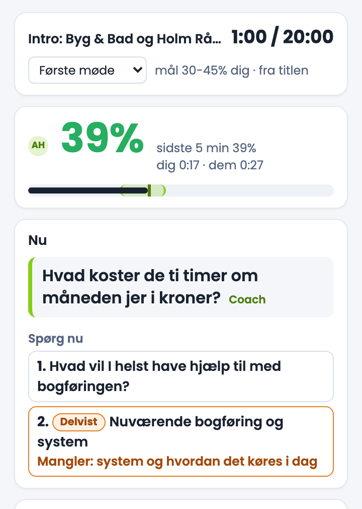
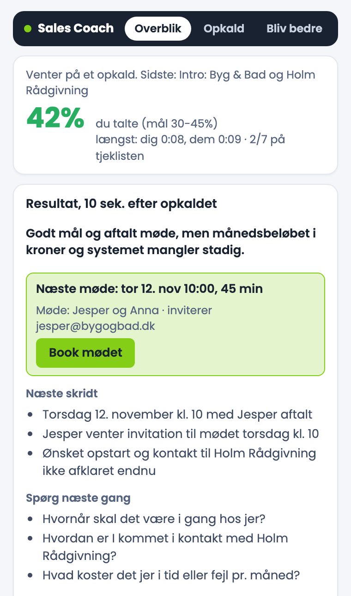

Sales Coach
En coach, der sidder med på dine salgsmøder. På din egen Mac, uden en bot i mødet.
Du er på en telefon. Åbn siden på din Mac for at installere.

Prøv den her
Et kort, opdigtet første møde spiller her på siden, uden lyd. Sæt din egen dagsorden ind, kryds af, tag noter, sæt en timer, skift mødetype og spol frem. Så ser du, hvad coachen ser.
Godt mål og aftalt møde, men månedsbeløbet i kroner mangler stadig.
I demoen bliver et punkt krydset af, når ordene fra punktet bliver sagt, og den anden part har svaret. I appen forstår Claude meningen, på dansk og engelsk. Prøv Oplæg som mødetype: så taler Anna for lidt.
Det løser den
De små problemer i en dag fuld af møder. De her fire virker fra første møde, uden opsætning og uden AI.
Mødet løber over tid
Mødets egen nedtælling fra kalenderen, i vinduet og i menulinjen. Orange de sidste minutter, rød når du er over, med et skub til at runde af og booke næste skridt.
Virker uden AIDu glemmer næste møde
Fra 15 minutter før står nedtællingen til dit næste møde i menulinjen, også mens du stadig sidder i det forrige. To minutter før åbner mødelinket af sig selv.
Virker uden AIDu taler for meget, eller for lidt
Din andel af taletiden, live, mod et mål for mødetypen. Et første møde vil have dig til at lytte, et oplæg vil have dig til at tale. Taler du for meget, beder den dig spørge og være stille. Taler du for lidt, beder den dig tage styringen.
Virker uden AIDu svarer selv på dine spørgsmål
Efter hvert spørgsmål måler den pausen, til nogen siger noget. Fylder du selv pausen et par gange, minder den dig om at vente. Bagefter og over ugerne kan du se, hvor tit de fik lov at svare.
Virker uden AIDu glemmer, hvad du skal spørge om
Med Claude slået til ved vinduet også, hvad mødet skal ende med. Det siger kun noget, når det betyder noget.
- 1
Uret og mødetypen
Tiden mod mødets længde. Mødetypen læses ud fra invitationen, og du kan skifte den: første møde, genoptag, gennemgang, lukkemøde, forhandling, partner, kundemøde, jobsamtale, 1:1-samtale, sparring, kundeservice, oplæg og team. Du kan også lave dine egne med dit eget mål.
- 2
Din taleandel
Det grønne felt er målet for mødetypen. Den mørke streg er dig.
- 3
Ét stikord ad gangen
Et opfølgende spørgsmål på det, de lige har sagt, et tal at grave i, eller at tiden er ved at løbe ud. Aldrig et manuskript. Her:
Hvad koster de ti timer om måneden jer i kroner?
lige efter, at kunden har sagt, at bogføringen tager ti timer om måneden. - 4
En tjekliste til netop det her møde
Lavet ud fra invitationen og dit sidste møde med de samme mennesker. Punkterne krydses af, når de svarer, med det, der stadig mangler. Længere nede i vinduet kører hele transskriptionen af begge sider, cirka 1,5 sekund efter det er sagt.
Din dagsorden og dine noter
Sæt din dagsorden ind, et punkt pr. linje, så krydser coachen punkterne af, mens I taler om dem. På dansk og engelsk.
- 1
Sæt den ind, før eller under mødet
Før mødet gemmes den til netop det møde, og den er klar, når I går i gang. Står dagsordenen som en liste i kalenderinvitationen, læser coachen den selv.
- 2
Krydset af ud fra samtalen
Coachen hører, når et punkt er dækket, og krydser det af med det, der blev sagt. Er det kun halvt dækket, står der, hvad der mangler.
- 3
Eller kryds selv af
Et klik på et punkt krydser det af, eller tager krydset væk igen. Uden AI er det din egen tjekliste til mødet.
- 4
Tag noter her
Dine egne noter står ved siden af og bliver gemt med mødet. Bagefter samler "Kopiér alt til en AI-chat" dine noter, dagsordenen, vurderingen og hele transskriptionen, klar til at sætte ind i en Claude-chat.
Du ved ikke, hvordan mødet gik
Coachens vurdering cirka ti sekunder efter, at du har lagt på, og noter cirka et minut efter.

1 2 3 4- 1
Mødet i tal
Din taleandel mod målet, din længste monolog og hvor meget af tjeklisten, I nåede.
- 2
Én ærlig sætning
Hvad der gik godt, og hvad der stadig mangler. Her:
Godt møde og booket torsdag, men pengene og udløseren står stadig åbne.
- 3
Næste møde, klar til at booke
Aftalte I et næste møde, står det klar med tidspunkt og deltagere. Ét klik åbner det i din kalender. Intet bliver sendt af sig selv.
- 4
Næste skridt, og hvad du skal spørge om næste gang
Plus én ting at øve dig på. Noterne med resumé, beslutninger og tal kommer et minut efter.
Bliv bedre
Ét møde siger ikke så meget. Over ugerne kan du se, om du bliver bedre, på tre ting og ikke flere.
- 1
Tre mål for ugen
Slut til tiden på alle møder. Hold taletiden inden for målet, og undgå lange monologer, på mindst 8 ud af 10 møder. Hvert møde er en prik, grøn eller rød, så du kan se præcis hvilke.
- 2
Udviklingen over otte uger
Bliver det bedre eller værre? Ugerne står ved siden af hinanden, så du ser det med det samme. Ved siden af målene: hvor tit dine spørgsmål fik lov at blive besvaret.
- 3
Coachens læsning af dig
Hvor du står lige nu i én sætning, én ting du gør godt med et eksempel fra et af dine møder, og to ting at øve med en konkret vane eller den sætning, du kan bruge.
- 4
Din feedback gør den bedre
Under hver vurdering kan du trykke Nyttig eller Ikke nyttig og skrive en note. Coachen tager det med ind i de næste møder. Alle dine møder ligger under Opkald, med vurdering, noter og transskription.
Optag folk ordentligt
GDPR kræver, at du fortæller folk, at du optager, at du ikke gemmer det længere end nødvendigt, og at du sletter det, når de beder om det. Coachen klarer det for dig.
Hej! Jeg optager vores samtale lokalt på min computer, så jeg kan skrive noter bagefter. Den deles ikke, men en AI-assistent (Claude) hjælper mig med noterne, og lyden slettes efter 7 dage. Sig endelig til, hvis du hellere vil have, at jeg ikke optager.
- 1
Det bliver sagt for dig
I Google Meet skriver coachen selv beskeden i mødets chat, så snart den anden part er med, ligesom en optagerbot gør. I Zoom, Teams og andre kopierer ét klik beskeden, så du sætter den ind med ⌘ V. Hvordan og hvornår de fik besked, gemmes med mødet.
- 2
Hvis de siger nej
"Stop og slet" stopper optagelsen med det samme og sletter alt fra mødet: lyd, transskription, noter og vurdering. Den starter ikke igen, før mødet er slut.
- 3
Ikke gemt længere end nødvendigt
Du vælger selv: lyden slettes lige efter mødet eller efter 7 eller 30 dage (7 er standard). Transskription og noter efter 30 dage, 90 dage, et år, eller når du selv sletter dem.
- 4
Slettet, når de beder om det
Hvert gemt møde har en knap, "Slet opkaldet". Så er optagelsen, noterne og din feedback på mødet væk.
Det siger reglerne
Du må optage en samtale, du selv er med i
I Danmark er det ikke strafbart at optage en samtale, du selv deltager i. Men bruger du optagelsen i din virksomhed, gælder GDPR, for stemmer og udskrifter er personoplysninger.
Du skal have en god grund
Typisk en legitim interesse, fx at kunne huske, hvad I aftalte, eller et samtykke. Skriv ned, hvorfor du optager. Indstil coachen, så den passer til din grund.
De skal have besked
Hvem der optager, hvorfor, hvor længe det gemmes, og at de kan sige nej. Den korte besked i chatten dækker det vigtigste, og du kan henvise til din privatlivspolitik for resten. Beskeden skrives for dig.
Ikke længere end nødvendigt
Gem kun så længe, du har brug for det. Slet lyden og noterne efter det antal dage, du vælger.
De har ret til indsigt og sletning
Beder de om at se, hvad du har, eller om at få det slettet, skal du kunne gøre det. "Kopiér alt" giver dem det hele, og "Slet opkaldet" sletter det.
Andre, der behandler data for dig
Med AI'en slået til behandler Anthropic teksten for dig, og det kræver en databehandleraftale. Tjek, at din Claude-plan har en. Slå AI'en fra, så forlader intet din Mac.
Pas på følsomme oplysninger
Taler I om helbred eller andre følsomme ting, gælder strengere regler. Brug "Stop og slet", eller slet lyden lige efter mødet.
Lås din Mac
Optagelserne ligger på din disk. Slå FileVault til, så de er krypteret, hvis Mac'en bliver væk.
Mere om reglerne hos Datatilsynet. Det her hjælper dig med at følge reglerne, men det er ikke juridisk rådgivning. Det er dig, der optager, så du bestemmer hvorfor og hvor længe. Med AI'en slået til går teksten fra mødet til Anthropic, firmaet bag Claude. Det står i beskeden, og tjek, at vilkårene for din Claude-plan passer til erhvervsbrug.
Dine møder bliver på din Mac
Optagelsen og omsætningen til tekst sker på Mac'en. Med AI'en slået til går kun teksten til Claude, på din egen Claude-konto. Intet går til os.
Sikker at installere
Coachen hører dine møder, så den er bygget til at være tryg at have på din Mac.
Kun optageren hører mikrofonen
Adgangen til mikrofon og lyd hører til en lille optager-app, der kun kører sin egen kode. Din API-nøgle ligger i Mac'ens nøglering, ikke i en fil.
Åben kildekode, ingen adgangskode
Al koden ligger på GitHub under MIT-licensen, og hver version bygges fra den. Installationen beder aldrig om din administrator-adgangskode.
Ikke underskrevet af Apple
Vi er ikke registreret som Apple-udvikler, derfor installeres den fra Terminal. Den henter sin egen Python og de pakker, coachen bruger, fra deres officielle kilder.
En side uden sporing
Siden her sætter ingen cookies og har ingen statistik, og skrifttyperne ligger på selve siden. En fejlrapport går til GitHub og er offentlig, så den udfylder kun de tekniske detaljer.
Alt det, den kan
Det hele på én liste. Det med AI bruger Claude, resten virker uden.
Under mødet
- Nedtælling til mødets slut, i vinduet og menulinjen
- Din taleandel live, mod et mål for mødetypen
- Besked, når du taler for længe i træk
- Besked, når du taler for meget, eller for lidt
- Pausen efter dine spørgsmål, og besked, når du svarer selv
- Dine egne noter, gemt med mødet
- En timer, du selv sætter: 2, 5, 10, 15 eller 30 minutter, med et bip
- Transskription af begge sider, dansk og engelsk
- Telefonopkald på højttaler: start og stop i menuen
- Din egen dagsorden, til at krydse af
- Dagsordenen krydset af ud fra samtalen AI
- Tjekliste ud fra invitationen og sidste møde AI
- Ét stikord ad gangen, når det betyder noget AI
Mellem møderne
- Nedtælling til næste møde fra 15 minutter før
- Mødelinket åbner af sig selv 2 minutter før
- Dagsorden til næste møde, gemt til det starter
- Forberedelse til dine næste møder: hvem, mål og hvad der stadig er ubesvaret AI
- Vinduet følger med til hvert møde, ved siden af det
- 13 mødetyper og dine egne, hver med sit mål
- Sig til coachen, hvad du vil blive bedre til AI
Efter mødet
- Mødet i tal: taleandel, længste monolog, tjekliste
- Vurdering 10 sekunder efter AI
- Næste møde klar til at booke i din kalender AI
- Noter et minut efter: resumé, næste skridt, beslutninger AI
- Alle dine møder under Opkald
- Bliv bedre: tre mål og otte ugers udvikling
- Coachens læsning af dig og hvad du skal øve AI
- Kopiér alt fra et møde til en AI-chat
Optagelser og privatliv
- Skriver selv i Google Meets chat, at du optager
- Kopiér beskeden til Zoom, Teams og andre
- Stop og slet et møde, mens det kører
- Slet lyden og noterne efter det antal dage, du vælger
- Slet et gemt møde med ét klik
- Alt bliver på din Mac, AI'en kører på din egen Claude
Gør den til din egen
Sales Coach er open source og bliver bedre hver uge, når vi forbedrer den til vores egne møder. Du kan indstille den til, hvordan du arbejder, og du kan rette i den og bygge videre selv.
Sig, hvad du vil blive bedre til
- Vælg blandt fx "Vente på svaret efter mine spørgsmål", "Få aftalt næste skridt med en dato" eller "Holde tiden"
- Eller skriv selv til din coach, med dine egne ord
- Coachen holder øje med det under møderne, i vurderingen bagefter og på Bliv bedre
Dine egne mødetyper
- Bestyrelsesmøde, workshop eller hvad du nu holder
- Med dit eget mål for, hvor meget du skal tale
- Coachen genkender de indbyggede typer ud fra invitationen
Ret i den
- Al kode ligger frit under MIT-licensen
- Ret i den, byg videre, og del det, hvis du vil
- Den kører på din Mac, så du bestemmer selv
Kobl dine egne systemer på
- Mail, sms og din kundeliste, gennem en lille tilføjelse
- Så ved coachen, hvem du taler med, før mødet starter
- Og holder dine systemer opdateret bagefter, som vi gør hos RM Marketing
Den del kræver en tilføjelse: en lille fil, der kobler dine egne systemer på. Vi arbejder på at gøre den nemmere at sætte op, og indtil da er den for de teknisk nysgerrige. Fortæl os, hvad du bruger.
Installér den
Cirka ti minutter første gang, mest talemodellen (cirka 6 GB, hentes én gang). Ingen administratoradgangskode.
Åbn Terminal
Tryk ⌘ Mellemrum, skriv Terminal og tryk Retur.
Sæt linjen ind og tryk Retur
curl -fsSL https://rmmarketingmcc.github.io/sales-coach/install.sh | bash
Henter Sales Coach... Version 0.2.0 Gør coachen klar... Henter talemodellen... Talemodellen er klar.
Svar på fire spørgsmål
Dit navn, dit firma, hvad du sælger i én linje, og sproget i dine møder (dansk eller engelsk). Så kan coachen skelne dig fra den anden part og ved, hvordan et godt møde ser ud for dig.
Har du Claude Code, finder den det selv. Ellers kan du sætte en API-nøgle fra Anthropic ind, eller springe over: taletid, transskription og ur virker uden.
Dit navn: Anna Holm Dit firma: Holm Rådgivning Hvad du sælger, i én linje: Bogføring til små firmaer Sproget i dine møder [da]: da Claude Code fundet.
Giv lov til tre ting
macOS spørger én gang for hver. Tryk Tillad. To korte lyde tester, at optagelsen virker, og testen bliver ikke gemt.
Bruger du Google Meet i Chrome: vælg én gang Se > Udvikler > Tillad JavaScript via Apple Events, så coachen kan skrive i mødets chat. I Safari hedder det Udvikler > Tillad JavaScript fra Apple Events.
Gå til et møde
Fra nu af kører den af sig selv. Når et møde starter i Meet, Zoom, Teams eller en anden mødeapp, åbner coachen ved siden af det. "Coach" i menulinjen viser din taleandel og har kontakterne.
Det skal du bruge
På Mac'en
- En Mac med Apple Silicon (M1 eller nyere)
- macOS 14.4 eller nyere
- Cirka 9 GB fri plads første gang
Til tjekliste, stikord og noter
- Claude Code, logget ind på dit Claude-abonnement
- eller en API-nøgle fra Anthropic (du betaler Anthropic for det, du bruger)
- Uden nogen af dem: taletid, transskription og ur
Spørgsmål
Kan den anden part se den?
Skal jeg selv fortælle, at jeg optager?
Hvilke sprog?
Hvor ligger mine optagelser?
CallRecordings i din hjemmemappe. Efter hvert møde bliver lyden pakket sammen, og den slettes efter 7 dage, medmindre du vælger noget andet. Transskription og noter bliver et år som standard. Begge dele er kontakter under "Coach" i menulinjen.Et telefonopkald, ikke et videomøde?
Hvordan opdaterer jeg den?
Kan jeg ændre den selv?
Hvordan fjerner jeg den?
curl -fsSL https://rmmarketingmcc.github.io/sales-coach/install.sh | bash -s -- --uninstall. Dine optagelser bliver i CallRecordings, til du selv sletter mappen.